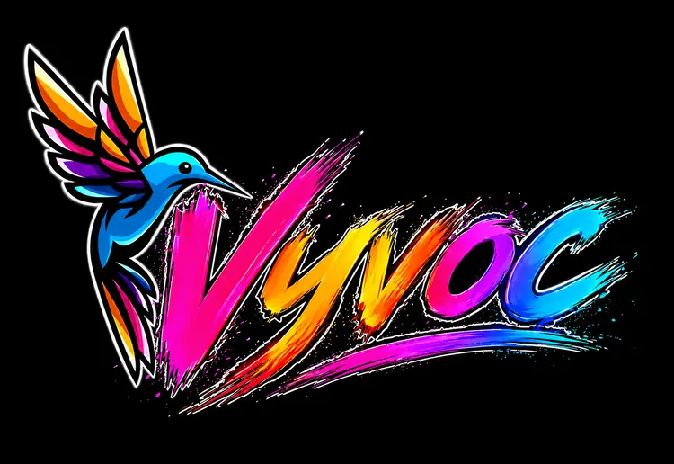
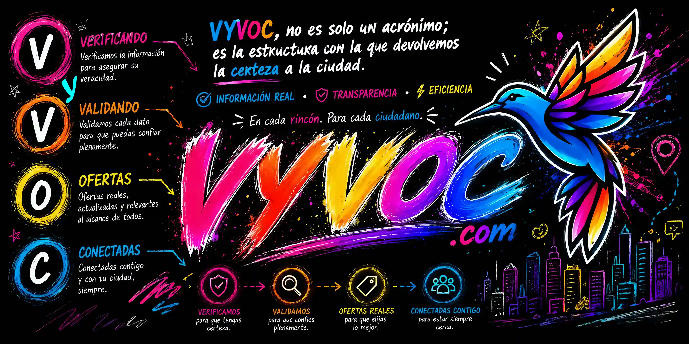

VYVOC MVP · Maturín · 2026
Conectamos compradores con negocios verificados en su zona. Precios reales, stock actualizado, contacto directo.
Encuentra. Conecta. Compra.
Lo que buscas está a la vuelta de la esquina y tú ni lo sabías... VYVOC te conecta, lo encuentra y te aligera el día.
Estamos construyendo VYVOC junto a nuestra comunidad. Únete al grupo de WhatsApp, comparte tu feedback y ayúdanos a mejorar el producto desde el primer día. ⤵
Nuestra misión
Transformar el comercio local Verificando y Validando cada Oferta real para tener una ciudad Conectada a través de un directorio transparente, accesible y adaptado a la realidad de Venezuela.
Nuestra visión
Convertirnos en la plataforma estándar de la región, donde Verificar la identidad de cada negocio y Validar cada Oferta real sea la norma que mantenga a las ciudades del país inteligentemente Conectadas.
Lo que nos mueve
Transparencia radical
Precios, stock y alternativas reales — aunque compitan.
Proximidad
El valor está a 2 cuadras, no en lo global.
Certeza
No publicamos humo. Cada dato se verifica.
Resiliencia
Construimos con lo que hay, para la realidad venezolana.
El Estándar VYVOC
A diferencia de las redes sociales, cada producto en VYVOC incluye un indicador visual que te dice con precisión matemática **hace cuánto tiempo se verificó el precio y el stock real**, eliminando sorpresas al llegar a la tienda.
**Aquí las posiciones no se compran.** El algoritmo ordena estrictamente por relevancia y proximidad geográfica real. Los comercios nuevos reciben un impulso justo (*Cold Start* temporal), asegurando igualdad de condiciones tanto para locales grandes como para pequeños emprendedores.
No somos un buscador genérico y frío. Cada comercio cuenta con una **mini-landing profesional integrada** dentro de nuestra estructura limpia (`/maturin/tiendas/nombre-negocio`), pensada como el canal de descubrimiento definitivo para la realidad de Venezuela.
¿Qué significa VYVOC?
VYVOC no es solo un acrónimo; es la estructura con la que devolvemos la certeza a la ciudad. Un flujo lógico diseñado para asegurar que la información real esté siempre al alcance de los ciudadanos, garantizando transparencia y eficiencia en cada rincón.
📍 Hecho en Maturín
Diseñado en Maturín, Estado Monagas, para toda Venezuela. Ingeniería local con estándares globales, infraestructura independiente y desarrollo soberano adaptado a nuestra realidad.